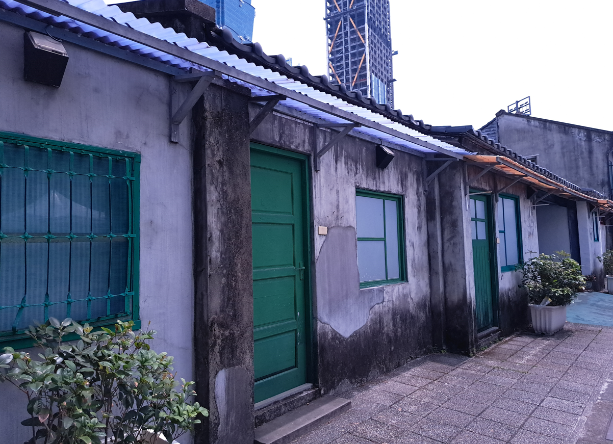
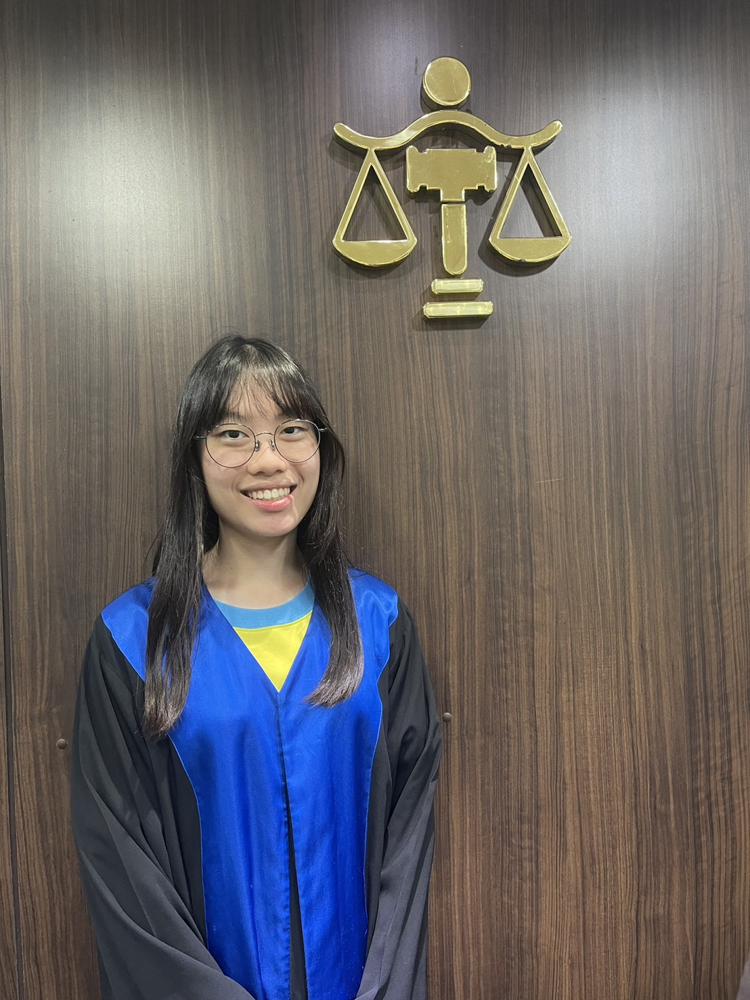
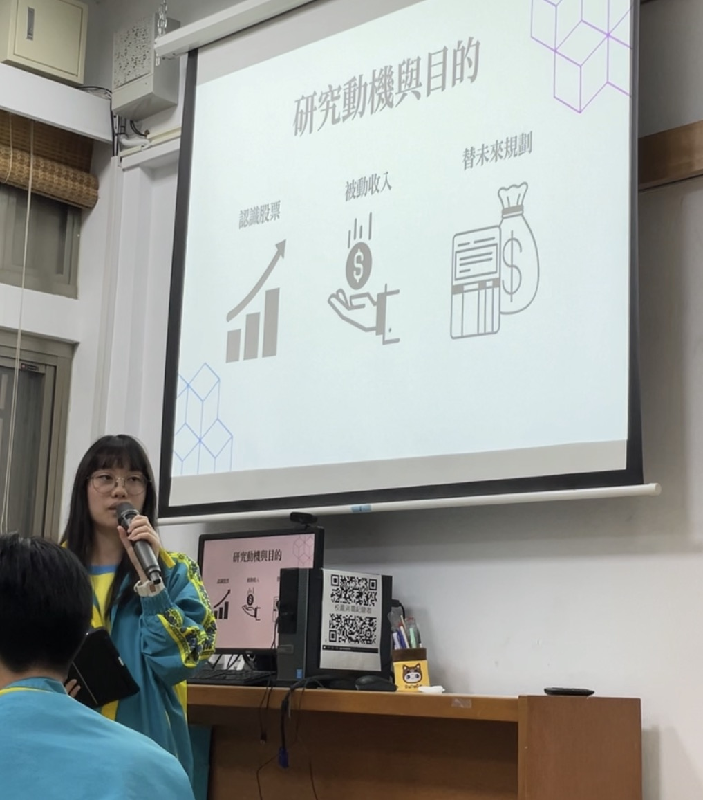
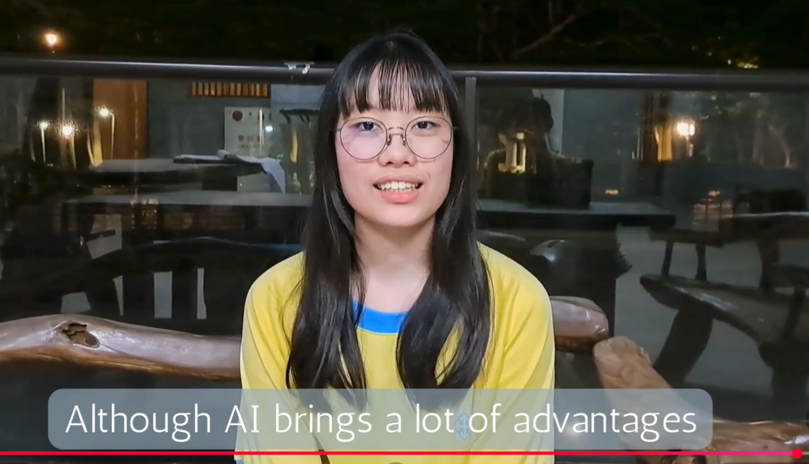
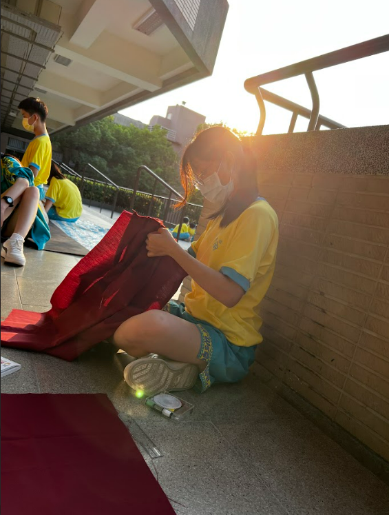
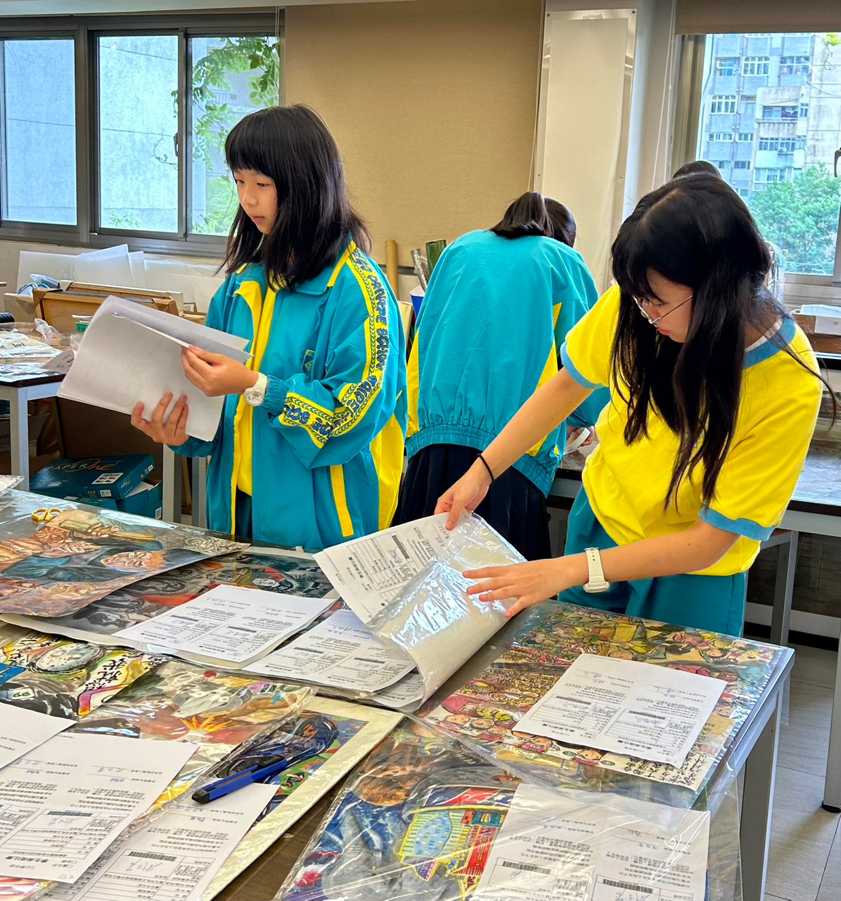
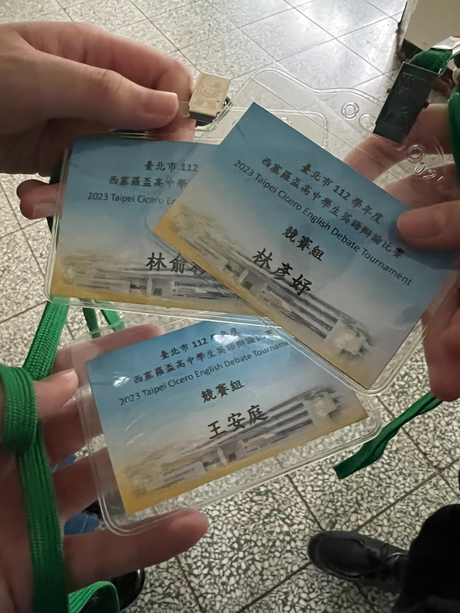

社會實察 / 師大商圈
師大商圈：住商衝突與政策研究
研究龍泉里因人潮引發的油煙、噪音等外部成本。實地記錄波浪形人行道、減速丘與速限 20 標示等行人友善設施。反思政府「記點制」標準不明確引發的爭議，探討商業利益與居住安寧間的平衡。
.jpg)
圖：龍泉街波浪形人行道實察拍攝
在文字中漫步，在音軌中生活。致力於社會觀察與跨領域實踐，透過實地訪查、文學創作與藝術志工服務，記錄每一段的成長波紋： 這是一份關於自我定義與社會觀測的數位回憶錄。
研究龍泉里因人潮引發的油煙、噪音等外部成本。實地記錄波浪形人行道、減速丘與速限 20 標示等行人友善設施。反思政府「記點制」標準不明確引發的爭議，探討商業利益與居住安寧間的平衡。
圖：龍泉街波浪形人行道實察拍攝
參訪台北首座眷村，探究 1948 年青島四十四兵工廠員生遷台歷史。分析 A-D 館如何從兵工廠舊址活化為現代藝文空間。對應余光中《鄉愁》詩句，體會「一灣淺淺的海峽」承載的家國情感。

圖：四四南村實地參訪
體驗法官（藍色）、檢察官（紫紅色）、律師（白色）之法袍權責。在憲法法庭觀察處理總統彈劾案件的莊嚴環境。觀察興亞式建築中的菊花圖案與玻璃自然採光設計。針對精神障礙判決與死刑釋憲「一致決」門檻進行法律思辨。

圖：實際體驗法袍(法官)
在 CMoney 操作朋億*(6613)、漢翔與衛司特，最終獲利 3.3% 名列第 15 。運用 KD 與 MACD 指標判斷出場。同時實踐「5D 反詐行動」：不點未知連結、不聽投資明牌等口訣，學習區分投資真實價值與投機題材之差異。

圖：投資理財報告畫面
文字拆解自我的鏡像，批判 AI 時代的資訊幻象。
引用顧里 (Cooley) 理論，分析他人評價如何將我形塑為不敢拒絕的「爛好人」。透過與評價保持距離，我找回了童年學琴時能自我開導的樂觀本質，體認到自我不應只是社會的產物，而具備獨立定義的能力。
在小說創作中探索歷史遺憾與道德權謀。《最後吔火車站》以鑽石糖描寫跨越 60 年的戰爭思念；《權謀璀璨》則構建上海「五七計畫」陰謀，描寫舞女間諜王曼麗在背叛與正義間的拉鋸。
研究震撼行銷 (Shockvertising) 與 AI 演算法產生的「資訊泡泡 (Information Bubble)」。製作英語創意 YouTuber 比賽影片探討 Deepfake 假訊息。我強調人類最核心的價值在於不盲從演算法、具備思索對錯的「反思能力」。

影片連結：https://youtu.be/-n4KDHsHsWM?si=ZwAl5inv-7ZooDbY
擔任樂團鍵盤手演出多首歌曲。在團隊磨合中曾經互不相讓，但我體會到「體諒與包容」是合作的關鍵，這份共同跨越挫折的經驗成為最珍惜的共感回憶。
圖：校外聯合展演畫面
親手縫製女配角裙裝與製作旋轉燈。面對與編劇的意見分歧，我學會放下固執，以「各退一步」達成良性溝通，體會到溝通需建立在接納對方的基礎上。

圖：縫製女配角裙裝畫面
佈置祈望亭「感恩」主題，並協助整理「台北市五項藝術比賽」作品收送件。透過繁瑣流程，掌握行政運作的嚴謹度，並體會師長行政工作的辛勞。

圖：協助整理台北市五項藝術比賽收件
擔任按鈴舉牌員，精準掌控 2 分、1 分及 30 秒的賽場節奏。這項任務鍛鍊了我在高壓英文辯論賽場中穩定執行細節與解決插曲的實戰經驗。

圖：競賽組工作證
完成線上語言軟體 50 部分課程，掌握 40 音發音技巧。
北投地理實察：研究第一間民營溫泉旅館「天狗庵」遺址、瀧乃湯皇太子探訪之「飛石」文化，並實地記錄地熱谷之變遷。